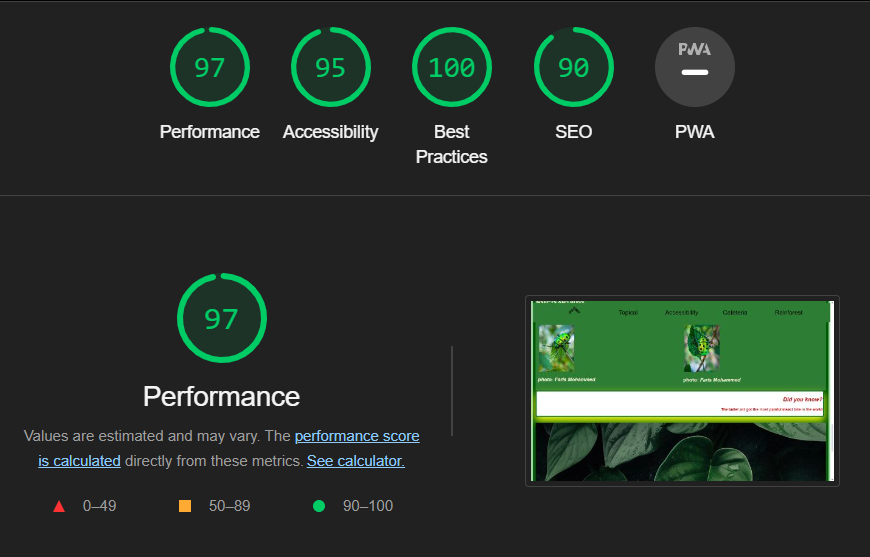
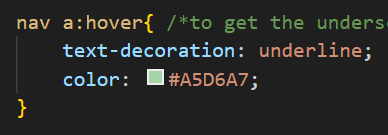
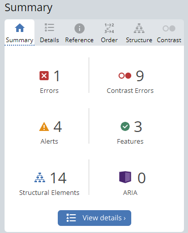

Accessibility page
Tested browsers include:
- Opera & Chrome
- Microsoft Edge
- Firefox
- Brave
- Safari
Photo by Sara Yldrim
To test the accessibility in our website, we ran our site on an automated test called “Wave.webaim.org”. One of the errors we received were contrast errors, in term of low contrast between text and background colors. The error appeared since we use a lot of green and black elements in the navigation bar and footer section. We discussed if we should change the color from black to white to fix this error. By not changing the color, it may be a problem for people with reduced vision or color blindness to see the content, but we have not tested this theory. We decided to keep the text as black in the headers and footers, since when testing the website on mobile devices, the content was clear for us, and we had no issue with seeing the navigation bar or footer section. We did however adjust the contrast scheme on the Rain Forest page by making the background a darker shade of green, and changing the text color to beige. By doing this, the content will apear clearer and more readable.
We also downscaled most of our images so they take less time to load into the website. This greatly improves performance. Here's the result of one of the performance tests, this one is specifically for the "Rain Forest" page;
While hovering over the nav-bar, we chose to have the nav text underlined while having a different color to make it easy to see while navigating it, as shown here in the code;
Here's one of the pages, ran throughhttps://wave.webaim.org/ showing one error that was fixed since it was a simple mistake and mostly constrast errors from the color contrasts in the nav and footer
One of the most consistant problems we kept running into was pathing. If a picture doesn't load, check the pathing. If the layout is suddenly very messed up, check the pathing. If all the colors are gone, you guessed it, pathing. By working in a group, we were easily able to overcome this problem simply by having extra pairs of eyes looking for errors, typos, or mislabled addresses.